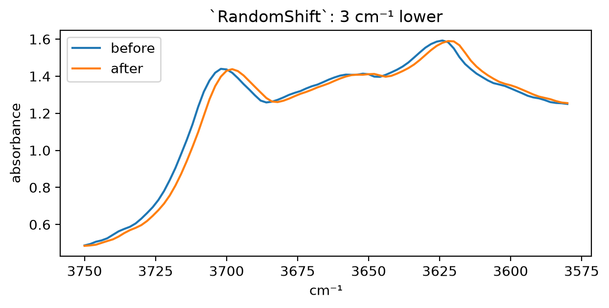
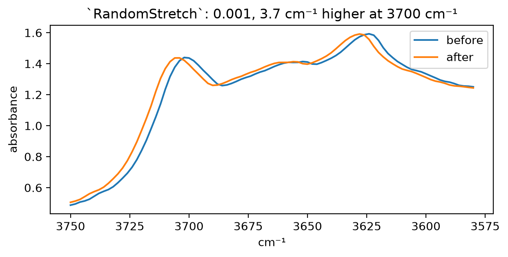
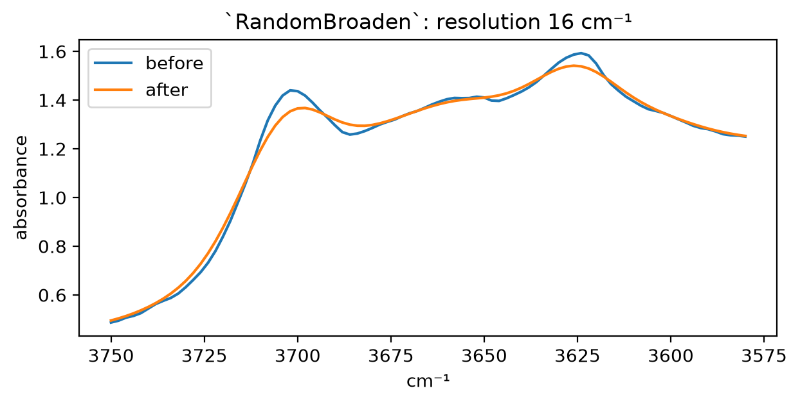
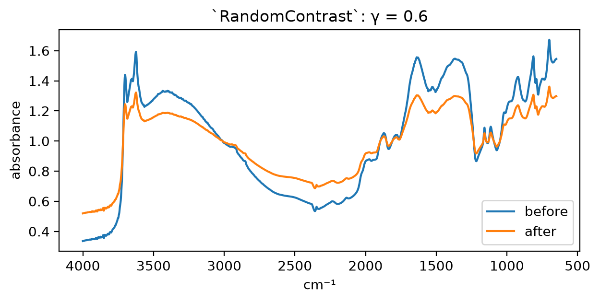
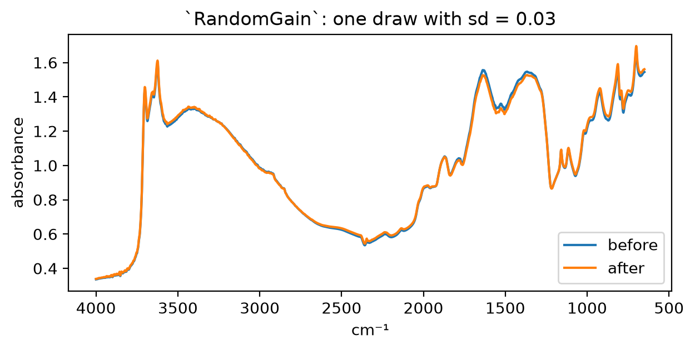
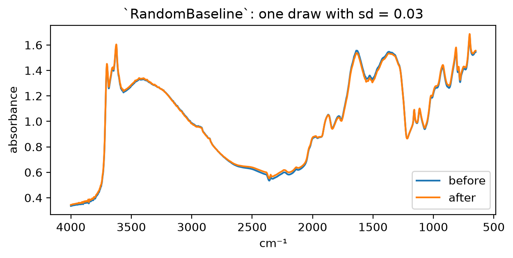

import pandas as pd, matplotlib.pyplot as plt
from fastcore.test import *
from fasttransform import Pipeline
from soilspecdl.all import get_splitter, predict
from soilspecdata.datasets.ossl import load_ossl
from soilspecdata.datasets.ringtrial import load_ringtrial
from ossl_rt_transfer.data import rt_path, ossl_props
from ossl_rt_transfer.pretrain import rt_wns, ossl_xy, preprocess, pretrain, load_pretrained, pretrain_history
from ossl_rt_transfer.sensitivity import perturb, sensitivity
from ossl_rt_transfer.zero_shot import zero_shotInstrument augmentation
Random instrument effects applied to OSSL spectra during pretraining, one transform for each effect
The cells that read OSSL and the ring-trial data are marked #| rtdata. The outputs on this page come from a local run.
04_sensitivity showed that the OSSL models change their predictions under instrument effects of a size that real instruments have, most for clay and most for a shift of the bands to lower wavenumbers. This notebook applies the same effects at random to OSSL spectra during pretraining, so that the model sees each soil as different instruments would measure it. It then tests whether the augmented models transfer better to the ring-trial instruments.
Each effect is a separate fastai transform, so that any subset can go in the tfm list of pretrain, in any order. The transforms act on absorbance, before BatchSNV, and only on training batches.
Effects on a batch
The functions below apply the effects of InstrumentModel with one set of parameters for each spectrum, in physical units as in perturb. Each parameter has the shape of x without its last axis, so that a batch of shape (bs, 1, n) takes parameters of shape (bs, 1):
baseline_spectra
def baseline_spectra(
x, # Absorbance spectra, wavenumbers on the last axis
B, # B-spline basis, one row per wavenumber, from `bspline_basis`
c, # Coefficients of the baseline, in absorbance, as in `gain_spectra`
):Add its own smooth baseline to each spectrum
gain_spectra
def gain_spectra(
x, # Absorbance spectra, wavenumbers on the last axis
B, # B-spline basis, one row per wavenumber, from `bspline_basis`
c, # Coefficients added to a gain of 1, shape of `x` without its last axis, then one per basis function
):Multiply each spectrum by its own smooth gain
contrast_spectra
def contrast_spectra(
x, # Absorbance spectra, wavenumbers on the last axis
gamma, # Power that each absorbance is raised to
):Raise the absorbance of each spectrum to its own power
broaden_spectra
def broaden_spectra(
x, # Absorbance spectra, wavenumbers on the last axis
sigma_cm, # Standard deviation of a Gaussian filter, in cm⁻¹
dw, # Spacing of the wavenumbers, in cm⁻¹
max_hw:int=20, # Half-width of the filter, in points
):Convolve each spectrum with its own Gaussian filter
shift_spectra
def shift_spectra(
x, # Absorbance spectra, wavenumbers on the last axis
wn, # Wavenumbers, evenly spaced
shift_cm:float=0.0, # Displacement of every band, in cm⁻¹, positive towards higher wavenumbers
stretch:float=0.0, # Displacement of each band as a fraction of its wavenumber
):Move the bands of each spectrum by shift_cm + stretch × wavenumber, with linear interpolation
Row by row, the functions give the same spectra as perturb:
rng = np.random.default_rng(0)
X = rng.uniform(0.2, 2, (4, len(rt_wns)))
x = torch.tensor(X)
B = bspline_basis(rt_wns.astype(float))
c = rng.normal(0, 0.03, (4, 10))
sh, st, sg, ga = [-3, -1, 0.5, 3], [1e-3, -5e-4, 0, 2e-4], [0.5, 2, 4, 6.6], [0.6, 0.9, 1.1, 1.4]
rows = lambda **kw: np.concatenate([perturb(X[i:i+1], **{k: v[i] for k, v in kw.items()}) for i in range(4)])
test_close(shift_spectra(x, rt_wns, shift_cm=sh).numpy(), rows(shift_cm=sh), eps=1e-12)
test_close(shift_spectra(x, rt_wns, stretch=st).numpy(), rows(stretch=st), eps=1e-12)
test_close(broaden_spectra(x, sg, 2.).numpy(), rows(sigma_cm=sg), eps=1e-12)
test_close(contrast_spectra(x, ga).numpy(), rows(gamma=ga), eps=1e-12)
test_close(gain_spectra(x, B, c).numpy(), rows(gain=c), eps=1e-12)
test_close(baseline_spectra(x, B, c).numpy(), rows(baseline=c), eps=1e-12)Random effects
RandomEffect applies the effect of a subclass to each spectrum of a training batch with probability p, and leaves the other spectra as they are. Validation batches pass through unchanged. Each subclass draws its parameters for each spectrum from a range in physical units. The default ranges are the ones agreed from 04_sensitivity: a shift of up to 3 cm⁻¹ and a stretch of up to 0.001 in either direction, a resolution of 4 to 16 cm⁻¹, γ from 0.6 to 1.4, and smooth gain and baseline coefficients with a standard deviation of 0.03:
RandomEffect
def RandomEffect(
p:float=0.5
):Apply effect to each spectrum of a training batch with probability p
RandomBaseline
def RandomBaseline(
wn, sd:float=0.03, n_basis:int=10, p:float=0.5
):Add a smooth baseline with B-spline coefficients of standard deviation sd, in absorbance
RandomGain
def RandomGain(
wn, sd:float=0.03, n_basis:int=10, p:float=0.5
):Multiply by a smooth gain of 1 plus B-spline coefficients with standard deviation sd
RandomContrast
def RandomContrast(
gamma:tuple=(0.6, 1.4), p:float=0.5
):Raise the absorbance to a power γ between gamma[0] and gamma[1], uniform in log γ
RandomBroaden
def RandomBroaden(
dw, res:tuple=(4.0, 16.0), base_res:float=4.0, p:float=0.5
):Lower the resolution from base_res to between res[0] and res[1] cm⁻¹, as a Gaussian FWHM
RandomStretch
def RandomStretch(
wn, max_stretch:float=0.001, p:float=0.5
):Move each band by up to max_stretch times its wavenumber in either direction
RandomShift
def RandomShift(
wn, max_cm:float=3.0, p:float=0.5
):Move all bands by up to max_cm cm⁻¹ in either direction
instrument_augs gives all six in the order of InstrumentModel. Put BatchSNV after them:
instrument_augs
def instrument_augs(
wn, # Wavenumbers, evenly spaced
p:float=0.5, # Probability of each effect
)->list: # Transforms, for the `tfm` list of `pretrain` before `BatchSNV`One random transform for each effect of InstrumentModel, with the default ranges
The transforms keep the type of the batch, change it only in training, and leave it unchanged with p=0. With p=0.5, about half of the spectra change:
xb = TensorSpectrum(torch.tensor(X[:, None], dtype=torch.float32))
for t in instrument_augs(rt_wns, p=1):
test_eq(type(t(xb, split_idx=0)), TensorSpectrum)
test_ne(t(xb, split_idx=0), xb)
test_eq(t(xb, split_idx=1), xb)
test_eq(RandomShift(rt_wns, p=0)(xb, split_idx=0), xb)
xm = TensorSpectrum(torch.tensor(np.repeat(X[:1, None], 1000, 0), dtype=torch.float32))
changed = (RandomShift(rt_wns)(xm, split_idx=0) != xm).any(-1).float().mean().item()
test_close(changed, 0.5, eps=0.05)
o = Pipeline([*instrument_augs(rt_wns), BatchSNV()], split_idx=0)(xb)
test_close(o.mean(-1), 0, eps=1e-5)Examples
Each plot shows one OSSL spectrum before and after one transform, with p=1 and the effect at a limit of its range. Shift, stretch and broadening are shown on the OH bands of kaolinite, near 3700 to 3600 cm⁻¹, where a few cm⁻¹ is visible:
om = load_ossl().mir(650, 4000)
Xc, yc, _ = ossl_xy(om, 'clay_perc')
x0 = TensorSpectrum(torch.tensor(Xc[np.argmax(yc.ravel() > 40)][None, None], dtype=torch.float32))
def show(after, title, xlim=(4000, 650)):
"Plot `x0` and `after` between the wavenumbers in `xlim`"
w = (rt_wns <= xlim[0]) & (rt_wns >= xlim[1])
fig, ax = plt.subplots(figsize=(7, 3))
for v, label in [(x0, 'before'), (after, 'after')]: ax.plot(rt_wns[w], v[0, 0][w], label=label)
ax.invert_xaxis(); ax.set_xlabel('cm⁻¹'); ax.set_ylabel('absorbance'); ax.set_title(title); ax.legend()
oh = (3750, 3580)show(shift_spectra(x0, rt_wns, shift_cm=-3.), '`RandomShift`: 3 cm⁻¹ lower', oh)
show(shift_spectra(x0, rt_wns, stretch=1e-3), '`RandomStretch`: 0.001, 3.7 cm⁻¹ higher at 3700 cm⁻¹', oh)
show(broaden_spectra(x0, np.sqrt(16**2 - 4**2)/2.355, 2.), '`RandomBroaden`: resolution 16 cm⁻¹', oh)
show(contrast_spectra(x0, 0.6), '`RandomContrast`: γ = 0.6')
cg = torch.tensor(np.random.default_rng(1).normal(0, 0.03, (1, 1, 10)), dtype=torch.float32)
show(gain_spectra(x0, B, cg), '`RandomGain`: one draw with sd = 0.03')
show(baseline_spectra(x0, B, cg), '`RandomBaseline`: one draw with sd = 0.03')
Training runs
Clay and K are trained for 20 epochs with seeds 42 and 43, with and without all six transforms at p=0.5. The seed sets the validation split and the training, so the OSSL validation R² compares runs with the same seed. The baseline with seed 42 is the 20-epoch model of 01_pretrain. The augmented runs get absorbance and use BatchSNV for the SNV that preprocess does in the baseline:
props, seeds = ['clay_perc', 'potassium_cmolkg'], [42, 43]
def fname(p, aug, seed): return f'ossl_{p}_{"aug" if aug else "snv"}_ep20' + ('' if seed == 42 else f'_seed{seed}')
runs = [(p, aug, s) for p in props for aug in (False, True) for s in seeds]
data = {p: ossl_xy(om, p)[:2] for p in props}
for p, aug, s in runs:
X, y = data[p]
if aug: pretrain(X, y, fname(p, aug, s), seed=s, epochs=20, tfm=[*instrument_augs(rt_wns), BatchSNV()])
else: pretrain(preprocess().fit_transform(X), y, fname(p, aug, s), seed=s, epochs=20)
models = {r: load_pretrained(fname(*r)) for r in runs}Results
The cost on OSSL is the validation R² at the last epoch:
idx = pd.MultiIndex.from_tuples(runs, names=['property', 'augmented', 'seed'])
ossl_r2 = pd.Series([pretrain_history(fname(*r)).r2_score.iloc[-1] for r in runs], index=idx, name='OSSL R²')
ossl_r2.unstack('augmented').round(3)| augmented | False | True | |
|---|---|---|---|
| property | seed | ||
| clay_perc | 42 | 0.883 | 0.874 |
| 43 | 0.891 | 0.881 | |
| potassium_cmolkg | 42 | 0.745 | 0.733 |
| 43 | 0.767 | 0.749 |
Augmentation lowers the OSSL validation R² by 0.009 to 0.010 for clay and by 0.012 to 0.018 for K.
Zero-shot scores on the 21 ring-trial instruments, as in 02_zero_shot, summarised by their median, and the scores on KSSL:
rtd = load_ringtrial(rt_path())
zs = pd.DataFrame([{'property': p, 'augmented': aug, 'seed': s, 'instrument': k, **zero_shot(models[(p, aug, s)], sp, p)}
for p, aug, s in runs for k, sp in rtd.items()])
zs['|bias|'] = zs.bias.abs()
keys = ['property', 'augmented', 'seed']
pd.concat({'median': zs.groupby(keys)[['R²', '|bias|']].median(),
'KSSL': zs[zs.instrument == 'KSSL'].set_index(keys)[['R²', 'bias']]}, axis=1).round(2)| median | KSSL | |||||
|---|---|---|---|---|---|---|
| R² | |bias| | R² | bias | |||
| property | augmented | seed | ||||
| clay_perc | False | 42 | 0.60 | 3.29 | 0.65 | 4.71 |
| 43 | 0.54 | 4.57 | 0.63 | 5.10 | ||
| True | 42 | 0.69 | 3.62 | 0.68 | 3.77 | |
| 43 | 0.59 | 3.25 | 0.66 | 4.39 | ||
| potassium_cmolkg | False | 42 | -0.01 | 0.28 | 0.31 | 0.12 |
| 43 | 0.12 | 0.19 | 0.35 | 0.13 | ||
| True | 42 | 0.16 | 0.20 | 0.28 | 0.09 | |
| 43 | 0.32 | 0.10 | 0.32 | 0.10 | ||
With both seeds, augmentation raises the median zero-shot R² over the 21 instruments. For clay it goes from 0.60 to 0.69 with seed 42 and from 0.54 to 0.59 with seed 43. For K, R² is on the log1p scale, and it goes from -0.01 to 0.16 and from 0.12 to 0.32. The median |bias| falls for K, from 0.28 to 0.20 and from 0.19 to 0.10 cmol/kg. For clay it rises with seed 42, from 3.29 to 3.62, and falls with seed 43, from 4.57 to 3.25. On KSSL itself, augmentation lowers the clay bias from 4.71 to 3.77 and from 5.10 to 4.39, and changes R² by less than 0.05.
The difference between the two seeds is as large as the gain from augmentation. Two seeds are not enough to give the size of the gain with confidence.
The distance to KSSL measures transfer without the labels. For each instrument and each soil that KSSL also measured, it takes the prediction from the instrument’s spectrum minus the prediction from the KSSL spectrum. The table gives the RMS of these differences over all soils and instruments, and the median over instruments of their mean, in log1p(K) for K:
def preds(m, sp): return pd.Series(predict(m, preprocess().fit_transform(sp.spectra), rt_wns).ravel(), index=sp.sample_ids)
def kssl_gap(r):
pk = preds(models[r], rtd['KSSL'])
d = {k: (preds(models[r], sp) - pk).dropna() for k, sp in rtd.items() if k != 'KSSL'}
return {'RMS': np.sqrt(np.mean(np.concatenate([v.values for v in d.values()])**2)), 'median bias': np.median([v.mean() for v in d.values()])}
gap = pd.DataFrame([kssl_gap(r) for r in runs], index=idx)
gap.round(3)| RMS | median bias | |||
|---|---|---|---|---|
| property | augmented | seed | ||
| clay_perc | False | 42 | 7.830 | -2.494 |
| 43 | 8.737 | -0.762 | ||
| True | 42 | 7.429 | -1.454 | |
| 43 | 8.240 | -1.542 | ||
| potassium_cmolkg | False | 42 | 0.250 | 0.103 |
| 43 | 0.232 | 0.057 | ||
| True | 42 | 0.231 | 0.080 | |
| 43 | 0.209 | 0.023 |
Augmentation brings the predictions from the other instruments closer to those from KSSL, but only a little: the RMS distance falls by 5% to 6% for clay and by 8% to 10% for K. The median bias for clay stays between -0.8 and -2.5 percentage points. 04_sensitivity found that a soil-specific difference shared by the labs explains about a third of the clay gap against KSSL. The augmentation does not model that difference.
The sensitivity check of 04_sensitivity runs again on the seed-42 models, with 2,000 spectra from their OSSL validation set and the effects at about the sizes that changed the 80-epoch models most:
cases = {'shift -2 cm⁻¹': dict(shift_cm=-2), 'shift +2 cm⁻¹': dict(shift_cm=2), 'stretch -5e-4': dict(stretch=-5e-4),
'res 16 cm⁻¹': dict(sigma_cm=np.sqrt(16**2 - 16)/2.355), 'γ 0.6': dict(gamma=0.6), 'γ 1.4': dict(gamma=1.4),
'gain sd 0.1': dict(gain=np.random.default_rng(0).normal(0, 0.1, 10))}
def valid_sample(p):
X, y = data[p]
vi = get_splitter(0.9, 0.1, seed=42)(X, y)[1]
return X[np.random.default_rng(0).choice(vi, 2000, replace=False)]
sens = pd.concat({(p, aug): sensitivity(models[(p, aug, 42)], valid_sample(p), {k: (lambda X, kw=kw: perturb(X, **kw)) for k, kw in cases.items()}).rms
for p in props for aug in (False, True)}, axis=1)
sens.columns.names = ['property', 'augmented']
sens.round(2)| property | clay_perc | potassium_cmolkg | ||
|---|---|---|---|---|
| augmented | False | True | False | True |
| shift -2 cm⁻¹ | 6.03 | 1.31 | 0.19 | 0.03 |
| shift +2 cm⁻¹ | 4.18 | 1.34 | 0.15 | 0.03 |
| stretch -5e-4 | 1.95 | 0.69 | 0.13 | 0.02 |
| res 16 cm⁻¹ | 6.09 | 2.13 | 0.16 | 0.05 |
| γ 0.6 | 2.67 | 1.36 | 0.09 | 0.05 |
| γ 1.4 | 2.35 | 1.33 | 0.09 | 0.04 |
| gain sd 0.1 | 2.18 | 1.65 | 0.06 | 0.05 |
The augmented models are much less sensitive to the effects they were trained with. A shift of 2 cm⁻¹ in either direction changes the clay predictions by 1.3 percentage points RMS, against 4.2 to 6.0 without augmentation. Broadening to a resolution of 16 cm⁻¹ changes them by 2.1, against 6.1. For both properties, the changes from shift, stretch and broadening fall by a factor of 3 to 6, and those from contrast by a factor of about 2. The gain case changes least: its standard deviation of 0.1 is outside the training range of 0.03.
Conclusions
- The augmented models are 3 to 6 times less sensitive to shift, stretch and broadening, and half as sensitive to contrast. They lose about 0.01 in OSSL validation R².
- Zero-shot R² on the ring trial improves for both properties and both seeds, by 0.05 to 0.09 for clay and by 0.17 to 0.20 for K. The variation between seeds is of the same size.
- Predictions from the other instruments move only 5% to 10% closer to those from KSSL. Most of the gap between instruments is therefore not the effects that
InstrumentModeldescribes.